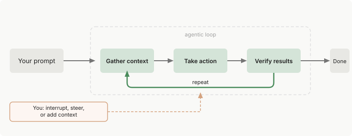
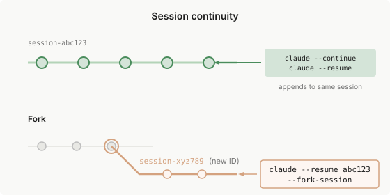

Claude Code 如何工作
Table of Contents
了解代理循环、内置工具以及 Claude Code 如何与您的项目交互
Claude Code 是一个在您的终端中运行的代理助手。虽然它在编码方面表现出色 但它可以帮助您完成从命令行可以做的任何事情：编写文档、运行构建、搜索文件、研究主题等
本指南涵盖核心架构、内置功能和 有效使用 Claude Code 的提示
- 有关分步演练，请参阅 常见工作流
- 有关 skills、MCP 和 hooks 等可扩展性功能，请参阅 扩展 Claude Code
代理循环
当您给 Claude 一个任务时，它会经历三个阶段：
- 收集上下文
- 采取行动
- 验证结果
这些阶段相互融合
Claude 始终使用工具，无论是搜索文件以了解您的代码、编辑以进行更改，还是运行测试以检查其工作

循环会根据您的要求进行调整
- 关于您代码库的问题可能只需要收集上下文
- 错误修复会循环通过所有三个阶段多次
- 重构可能涉及广泛的验证
Claude 根据从前一步学到的内容决定每一步需要什么，将数十个操作链接在一起并沿途进行纠正
您也是这个循环的一部分。您可以在任何时刻
- 中断以引导 Claude 朝不同的方向发展
- 提供额外的上下文
- 要求它尝试不同的方法
Claude 自主工作但对您的输入保持响应
代理循环由两个组件驱动：模型 进行推理和 工具 采取行动。Claude Code 充当 Claude 周围的 代理框架 ：
- 它提供
- 工具
- 上下文管理
- 执行环境
- 将语言模型转变为能够进行编码的代理
模型
Claude Code 使用 Claude 模型来理解您的代码并推理任务
Claude 可以读取任何语言的代码、理解组件如何连接，以及找出需要改变什么来实现您的目标 对于复杂的任务，它将工作分解为步骤、执行它们，并根据学到的内容进行调整
多个模型 可用，具有不同的权衡
- Sonnet 可以很好地处理大多数编码任务
- Opus 为复杂的架构决策提供更强的推理能力
在会话期间使用 /model 切换或使用 claude –model <name> 启动
当本指南说”Claude 选择”或”Claude 决定”时，是模型在进行推理
工具
工具是使 Claude Code 成为代理的原因。没有工具，Claude 只能用文本回应。有了工具，Claude 可以采取行动：
- 读取您的代码
- 编辑文件
- 运行命令
- 搜索网络
- 与外部服务交互
每个工具使用都会返回信息，反馈到循环中，告知 Claude 的下一个决定
内置工具通常分为五个类别，每个类别代表不同类型的代理能力
| 类别 | Claude 可以做什么 |
| 文件操作 | 读取文件、编辑代码、创建新文件、重命名和重新组织 |
| 搜索 | 按模式查找文件、使用正则表达式搜索内容、探索代码库 |
| 执行 | 运行 shell 命令、启动服务器、运行测试、使用 git |
| 网络 | 搜索网络、获取文档、查找错误消息 |
| 代码智能 | 编辑后查看类型错误和警告、跳转到定义、查找引用（需要代码智能插件） |
这些是主要功能。Claude 还有用于生成 subagents、询问您问题和其他编排任务的工具 有关完整列表，请参阅Claude 可用的工具 https://code.claude.com/docs/zh-CN/tools-reference
Claude 根据您的提示和沿途学到的内容选择使用哪些工具。当您说”修复失败的测试”时，Claude 可能会：
- 运行测试套件以查看失败的内容
- 读取错误输出
- 搜索相关的源文件
- 读取这些文件以理解代码
- 编辑文件以修复问题
- 再次运行测试以验证
每个工具使用都给 Claude 新的信息，告知下一步。这就是代理循环的实际应用
扩展基本功能 ： 内置工具是基础。您可以
这些扩展形成了核心代理循环之上的一层 有关为您的需求选择正确扩展的指导，请参阅扩展 Claude Code https://code.claude.com/docs/zh-CN/features-overview
Claude 可以访问什么
本指南重点关注终端。Claude Code 也在 VS Code、JetBrains IDE 和其他环境中运行
当您在目录中运行 claude 时，Claude Code 可以访问：
- 您的项目：
- 您目录和子目录中的文件
- 其他地方有您许可的文件
您的终端：您可以运行的任何命令：
- 构建工具
- git
- 包管理器
- 系统实用程序
- 脚本
如果您可以从命令行做到，Claude 也可以
- 您的 git 状态：
- 当前分支
- 未提交的更改
- 最近的提交历史
- 您的 CLAUDE.md : 一个 markdown 文件，您可以在其中存储项目特定的说明、约定和 Claude 应该在每个会话中了解的上下文
自动内存：Claude 在您工作时自动保存的学习内容，如项目模式和您的偏好
MEMORY.md 的前 200 行或 25KB（以先到者为准）在每个会话开始时加载
- 您配置的扩展：
- 用于外部服务的 MCP servers
- 用于工作流的 skills
- 用于委派工作的 subagents
- 用于浏览器交互的 Claude in Chrome
因为 Claude 看到您的整个项目，它可以跨越它工作
当您要求 Claude”修复身份验证错误”时，它搜索相关文件、读取多个文件以理解上下文、跨它们进行协调编辑、运行测试以验证修复，并在您要求时提交更改 这与只看到当前文件的内联代码助手不同
环境和界面
上面描述的代理循环、工具和功能在您使用 Claude Code 的任何地方都是相同的
改变的是代码执行的位置以及您与它交互的方式
执行环境
Claude Code 在三个环境中运行，每个环境对代码执行位置有不同的权衡
| 环境 | 代码运行位置 | 用例 |
| 本地 | 您的机器 | 默认，完全访问您的文件、工具和环境 |
| 云 | Anthropic 管理的虚拟机 | 卸载任务、处理您本地没有的仓库 |
| 远程控制 | 您的机器，从浏览器控制 | 使用网络 UI 同时保持一切本地 |
界面
您可以通过终端、桌面应用、 IDE 扩展、claude.ai/code 、远程控制、Slack 和 CI/CD 管道访问 Claude Code
界面决定了您如何看到和与 Claude 交互，但底层的代理循环是相同的 有关完整列表，请参阅在任何地方使用 Claude Code https://code.claude.com/docs/zh-CN/overview#use-claude-code-everywhere
使用会话
Claude Code 在您工作时将您的对话保存在本地。每条消息、工具使用和结果都被写入 ~/.claude/projects/ 下的纯文本 JSONL 文件，这使得 回退 、 恢复 和 分叉 会话成为可能。在 Claude 进行代码更改之前，它还会对受影响的文件进行 快照 ，以便您在需要时可以恢复
有关路径、保留和如何清除此数据，请参阅~/.claude 中的应用数据 https://code.claude.com/docs/zh-CN/claude-directory#application-data
会话是 独立的 。 每个新会话都以新的上下文窗口开始，没有来自以前会话的对话历史
Claude 可以使用自动内存跨会话保持学习，您可以在 CLAUDE.md 中添加您自己的持久说明
跨分支工作
每个 Claude Code 对话都是一个与您当前目录相关的会话。 /resume 选择器默认显示来自当前 worktree 的会话，带有键盘快捷键以扩展列表到其他 worktrees 或项目
有关选择器快捷键的完整列表以及名称解析如何工作，请参阅管理会话 https://code.claude.com/docs/zh-CN/sessions#use-the-session-picker
Claude 看到您当前分支的文件。当您切换分支时，Claude 看到新分支的文件，但您的对话历史保持不变
Claude 记得您讨论过的内容，即使在切换后也是如此
由于会话与目录相关，您可以通过使用 git worktrees 运行并行 Claude 会话，这为各个分支创建单独的目录
恢复或分叉会话
- 使用 claude –continue 或 claude –resume 恢复 会话会在相同的会话 ID 下重新打开它，并将 新消息 附加 到现有对话
- 使用 –fork-session 或 /branch 分叉会将历史 复制 到新的会话 ID 中， 保持 原始会话不变

有关恢复标志、/resume 选择器、命名以及当相同会话在两个终端中打开时会发生什么，请参阅管理会话 https://code.claude.com/docs/zh-CN/sessions
上下文窗口
Claude 的上下文窗口保存您的对话历史、文件内容、命令输出、CLAUDE.md、自动内存、加载的 skills 和系统说明。当您工作时，上下文填满。Claude 自动压缩，但对话早期的说明可能会丢失
- 将持久规则放在 CLAUDE.md 中，并运行 /context 以查看什么在占用空间
有关交互式演练，了解什么加载以及何时加载，请参阅探索上下文窗口 https://code.claude.com/docs/zh-CN/context-window
当上下文填满时
Claude Code 在您接近限制时自动管理上下文。它
- 清除较旧的工具输出
- 在需要时总结对话
您的请求和关键代码片段被保留；对话早期的详细说明可能会丢失
将持久规则放在 CLAUDE.md 中，而不是依赖对话历史
要控制在压缩期间保留的内容，请在 CLAUDE.md 中添加 Compact Instructions 部分或使用焦点运行 /compact
如 /compact focus on the API changes
如果单个文件或工具输出太大，以至于在每次总结后上下文立即重新填充，Claude Code 会在几次尝试后停止自动压缩，并显示错误而不是循环
有关恢复步骤，请参阅自动压缩停止并出现抖动错误 https://code.claude.com/docs/zh-CN/troubleshooting#auto-compaction-stops-with-a-thrashing-error
- 运行 /context 以查看什么在占用空间
- MCP 工具定义默认被延迟，并通过工具搜索按需加载，因此只有工具名称消耗上下文，直到 Claude 使用特定工具
- 运行 /mcp 以检查每个服务器的成本
使用 skills 和 subagents 管理上下文
除了压缩，您可以使用其他功能来控制什么加载到上下文中。
- Skills 按需加载。Claude 在会话开始时看到 skill 描述，但完整内容仅在使用 skill 时加载
- 对于您手动调用的 skills，设置 disable-model-invocation: true 以将描述保留在上下文之外，直到您需要它们
- 对于您没有编写的 skills，使用 skillOverrides 从设置中执行相同操作
Subagents 获得自己的新上下文，完全独立于您的主对话
他们的工作不会使您的上下文膨胀，完成后，他们返回一个摘要 这种隔离是为什么 subagents 有助于长会话
有关每个功能的成本，请参阅上下文成本 https://code.claude.com/docs/zh-CN/features-overview#understand-context-costs 有关管理上下文的提示，请参阅减少令牌使用 https://code.claude.com/docs/zh-CN/costs#reduce-token-usage
使用检查点和权限保持安全
Claude 有两个安全机制：
- checkpoints 让您撤销文件更改
- 权限控制 Claude 可以在不询问的情况下做什么
使用 checkpoints 撤销更改
每个文件编辑都是可逆的 在 Claude 编辑任何文件之前，它会对当前内容进行快照。如果出现问题，按两次 Esc 以回退到之前的状态，或要求 Claude 撤销
Checkpoints 是会话本地的，独立于 git。它们仅涵盖文件更改 影响远程系统的操作（数据库、API、部署）无法进行 checkpointing，这就是为什么 Claude 在运行具有外部副作用的命令之前询问
控制 Claude 可以做什么
按 Shift+Tab 循环通过权限模式：
- Default：Claude 在文件编辑和 shell 命令之前询问
Auto-accept edits：Claude 编辑文件并运行常见的文件系统命令而不询问，仍然询问其他命令
如 mkdir 和 mv
Plan Mode：Claude 探索并提出计划而不编辑您的源文件；权限提示仍然适用
如默认模式
Auto mode：Claude 使用后台安全检查评估所有操作
目前是研究预览
也可以在 .claude/settings.json 中允许特定命令，以便 Claude 不会每次都询问
这对于受信任的命令（如 npm test 或 git status）很有用 设置可以从组织范围的策略范围到个人偏好。有关详细信息，请参阅权限 https://code.claude.com/docs/zh-CN/permissions
有效使用 Claude Code
这些提示可以帮助您从 Claude Code 获得更好的结果
向 Claude Code 寻求帮助
Claude Code 可以教您如何使用它
提出问题，如”我如何设置 hooks？“或”构建我的 CLAUDE.md 的最佳方式是什么？“，Claude 会解释
内置命令也会指导您完成设置：
- /init 引导您为项目创建 CLAUDE.md
- /agents 帮助您配置自定义 subagents
- /doctor 诊断您的安装的常见问题
这是一个对话
Claude Code 是对话式的。您不需要完美的提示。从您想要的开始，然后细化：
修复登录错误
[Claude 调查，尝试一些东西]
这不太对。问题在于会话处理
[Claude 调整方法]
当第一次尝试不对时，您不会重新开始。您迭代
中断和引导
您可以在任何时刻重定向 Claude，无需等待轮次完成或重新开始：
- 按 Esc 立即停止 Claude: 正在运行的工具调用被取消，Claude 等待您的下一条指令
- 输入更正并按 Enter 在不停止正在运行的工具的情况下发送: Claude 在当前操作完成后立即读取它，并在决定下一步之前进行调整
预先具体
您的初始提示越精确，您需要的更正就越少。参考特定文件、提及约束并指出示例模式
结账流程对于持有过期卡的用户来说已损坏。 检查 src/payments/ 中的问题，特别是令牌刷新。 首先编写一个失败的测试，然后修复它。
模糊的提示有效，但您会花更多时间引导 像上面这样的具体提示通常在第一次尝试时就成功
给 Claude 一些东西来验证
Claude 在能够检查自己的工作时表现更好。包括测试用例、粘贴预期 UI 的屏幕截图或定义您想要的输出
实现 validateEmail。测试用例：'user@example.com' → true， 'invalid' → false，'user@.com' → false。之后运行测试
对于视觉工作，粘贴设计的屏幕截图并要求 Claude 将其实现与其进行比较
在实现之前探索
对于复杂的问题，将研究与编码分开。使用 Plan Mode （按 Shift+Tab 两次）首先分析代码库：
读取 src/auth/ 并理解我们如何处理会话。 然后为添加 OAuth 支持创建一个计划
审查计划，通过对话细化它，然后让 Claude 实现
这种两阶段方法比直接跳到代码产生更好的结果
委派，不要指示
想象委派给一个有能力的同事。提供上下文和方向，然后相信 Claude 会弄清楚细节：
结账流程对于持有过期卡的用户来说已损坏。 相关代码在 src/payments/ 中。您可以调查并修复它吗？
您不需要指定要读取哪些文件或运行什么命令。Claude 会弄清楚
| Next：扩展Claude | Home: 核心概念 |